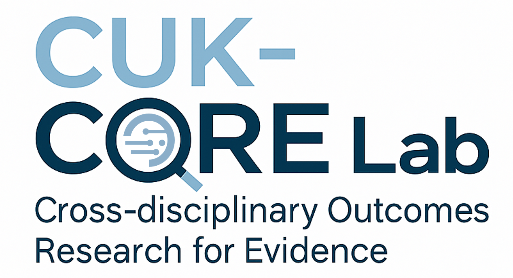

약물경제성평가
의약품, 백신과 치료전략의 비용효과성 및 가치를 분석하여 합리적인 급여와 보건의료 자원배분을 위한 근거를 제시합니다.

CUK-CORE Lab Cross-disciplinary Outcomes Research for EvidenceCross-disciplinary Outcomes Research for Evidence
CUK-CORE Lab은 가톨릭대학교 약학대학 박선경 교수가 이끄는 보건사회약학 연구실입니다. 의약품과 보건의료 중재가 실제 진료 환경에서 만드는 가치와 성과를 연구합니다.
박선경 교수 · 가톨릭대학교 약학대학 · 보건사회약학
연구실 소개
가톨릭대학교 사회약학 연구실 CUK-CORE Lab은 의약품, 백신 및 보건의료 중재의 임상적·경제적 가치를 평가합니다. 연구 결과가 환자와 보건의료 정책의 더 나은 의사결정으로 이어질 수 있도록 정량적 근거를 만드는 데 집중합니다.
경제성평가, 체계적 문헌고찰과 베이지안 네트워크 메타분석, 건강보험 등 보건의료 빅데이터 분석, 의료비용 연구와 약물역학을 연결하여 실제 의료 현장의 질문에 답합니다.
주요 연구 분야
의약품, 백신과 치료전략의 비용효과성 및 가치를 분석하여 합리적인 급여와 보건의료 자원배분을 위한 근거를 제시합니다.
실제 진료자료와 보건의료 빅데이터를 활용하여 의료이용, 치료성과, 안전성과 질병부담을 분석합니다.
체계적 문헌고찰과 네트워크 메타분석으로 분산된 연구근거를 통합하고 의약품 정책과 임상 의사결정에 활용합니다.
연구 및 진학 문의
가톨릭대학교 약학대학, 경기도 부천시 지봉로 43 정진석추기경약학관